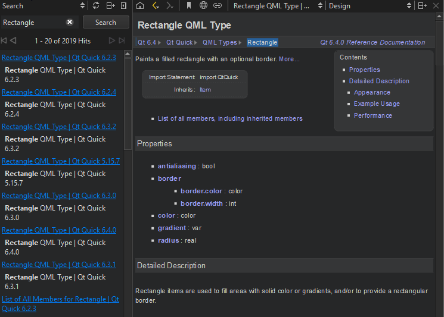

Search from documentation
In the Help mode Search pane, you can use full-text search for finding a particular word in all the installed documents. Enter the term you are looking for, and select the Search button. All documents that have the specified term are listed. The list is sorted by document version (if you have installed several Qt versions, for example) and the number of search hits that the documents have. Select a document in the list to open it.

The following are examples of common search patterns:
deeplists all the documents that have the worddeep. The search is not case sensitive.deep*lists all the documents that have a word beginning withdeepdeep copylists all documents that have bothdeepandcopy"deep copy"lists all documents that have the phrasedeep copy
Full-text search is based on indexing all the installed documents the first time when you open the Search pane. If you add or remove documents, Qt Design Studio recreates the index.
If you cannot find words that you know are there, indexing might not have been completed for some reason. To regenerate the index, click (Regenerate Index).
Punctuation is not included in indexed terms. To find terms that have punctuation, such as domain names, use the asterisk as a wild card. For example, to find Pastebin.Com, enter the search term Pastebin*.
See also Find information in Qt documentation.